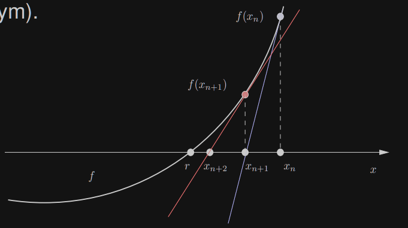

1. Metoda Newtona (metoda stycznych)
Założenia:
- f∈C2[a,b]
- f′(r)=0 (r jest pierwiastkiem jednokrotnym)

- f(x)=f(xn)+f′(xn)⋅(x−xn)+O((x−xn)2) szereg Taylora
- f(x)≈f(xn)+f′(xn)(x−xn) linearyzacja
- xn+1=xn−f′(xn)f(xn)=xn+hn(n≥0)x0 jest dane (hn to jest poprawka)
Warunek końca: ∣xn+1−xn∣≤δ,∣f(xn+1)∣≤ϵ.
2. Algorytm
- Dane: x0,M,δ,ϵ
- Wyniki: k,r~,f(r~)
- v←f(x0)
if ∣v∣<ϵ:
return 0,x0,v
for k←1 to M:
- x1←x0−f′(x0)v
- v←f(x1)
if ∣x1−x0∣<δ or ∣v∣<ϵ:
return k,x1,v
- x0←x1
Powyższy algorytm korzysta z funkcji liczących f(x) oraz f′(x).
3. Twierdzenie o lokalnej zbieżności metody Newtona
Niech f∈C2[a,b] oraz r będzie jednokrotnym pierwiastkiem f.
Wówczas istnieje otoczenie r i stała C i jeśli przybliżenie początkowe x0 należy do otoczenia r, to ciąg konstruowanych przez metodę Newtona przybliżeń {xn} spełnia ∣xn+1−r∣≤C⋅(xn−r)2.
Ponadto limn→∞xn=r.
3.1. D-d
3.1.1. Wykładnik zbieżności
Przez błąd rozumiemy wielkość en=xn−r. en+1=xn+1−r=xn−f′(xn)f(xn)−r=en−f′(xn)f(xn)=f′(xn)en⋅f′(xn)−f(xn).
Rozwijamy f w szereg Taylora w otoczeniu xn: f(r)=f(xn)+f′(xn)⋅(r−xn)+21f′′(ζn)⋅(r−xn)2==f(xn)−f′(xn)en+21f′′(ζn)⋅en2 gdzie ζn jest liczbą leżącą między r oraz xn.
0=f(r)=f(xn)−f′(xn)⋅en+21⋅f′′(ζn)⋅en2
Przekształcając powyższe równanie otrzymujemy f′(xn)⋅en−f(xn)=21⋅f′′(ζn)⋅en2
en+1=f′(xn)en⋅f′(xn)−f(xn)=21f′(xn)f′′(ζn)⋅en2≈≈21f′(r)f′′(r)⋅en2=C⋅en2 (zakładamy, że xn→r)
3.1.2. Zbieżność
Zdefiniujmy c(δ): c(δ)=21min∣x−r∣≤δ∣f′(x)∣max∣x−r∣≤δ∣f′′(x)∣(δ>0)
Wybierzmy δ (zmniejszając wartość), takie, że δ⋅c(δ)<1. Można to zrobić, ponieważ jak δ→0,c(δ)→21∣f′(r)∣∣f′′(r)∣, to δ⋅c(δ)→0.
Ustalmy δ i połóżmy ρ=δ⋅c(δ). Załóżmy, że x0 jest punktem startowym metody Newtona spełniającym ∣x0−r∣≤δ.
Wówczas ∣e0∣≤δ oraz ∣ζ0−r∣≤δ.
Stąd 21∣∣∣∣∣f′(x0)f′′(ζ0)∣∣∣∣∣≤c(δ).
Pokażemy, że kolejne przybliżenie x1 leży w otoczeniu r. ∣x1−r∣=∣e1∣≤e02⋅c(δ)=∣e0∣⋅∣e0∣⋅c(δ)≤∣e0∣δ⋅c(δ)=∣e0∣ρ<∣e0∣≤δ
Stąd mamy ∣e1∣≤ρ∣e0∣.
Uogólniając ∣en∣≤ρ∣en−1∣≤ρ2∣en−2∣≤⋯≤ρn∣e0∣.
Z faktu, że ρ<1 wynika limn→∞ρn=0, w konsekwencji limn→∞en=0. ■
3.2. Przykład
f(x)=(2x)2+sinx
Wyznaczyć metodą Newtona miejsce zerowe funkcji f w przedziale [1.5;2] z dokładnością δ=0.510 a x0=1.5.
| 0 |
1.5 |
0.6439 |
−0.43374 |
| 1 |
2.14039 |
−0.18838 |
0.26644 |
| 2 |
1.95201 |
−0.018808 |
0.0111825 |
| 3 |
1.93393 |
−0.00018 |
0.00018 |
| 4 |
1.933375 |
<510−6 |
<510−6 |
Metoda bisekcji wykonała 17 iteracji dla a=1.5 oraz b=2.
4. Twierdzenie#3
Niech [a;b] będzie przedziałem takim, że:
- f(a) oraz f(b) mają przeciwne znaki
- f′′(x) jest ciągła i zmienia znaku na [a;b]
- styczne do krzywej f(x) poprowadzone w punktach o odciętych a oraz b przecinają OX wewnątrz przedziału [a;b]
Wówczas f ma dokładnie jedno zero w [a;b] i metoda Newtona jest zbieżna do r dla dowolnego punktu startowego x0∈[a;b].